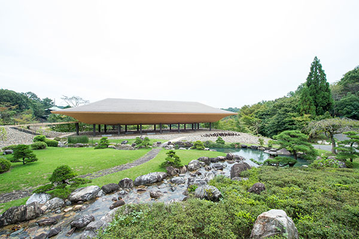
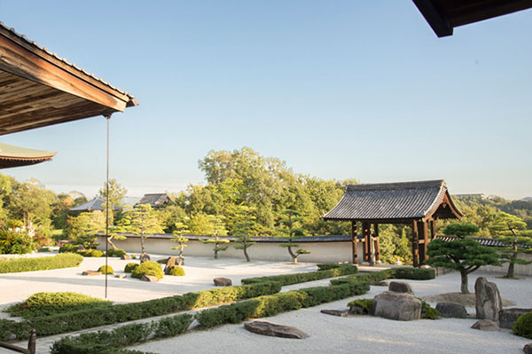
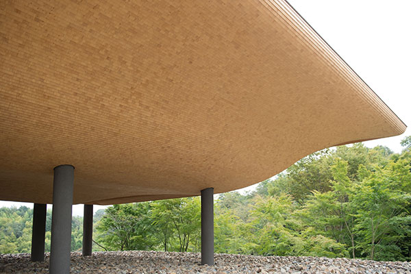
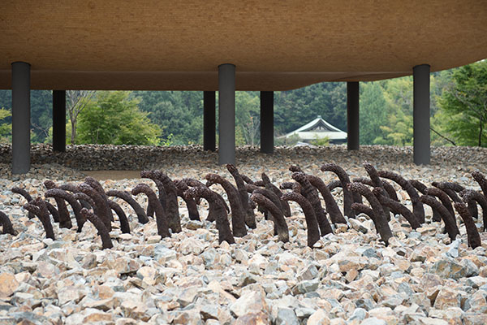
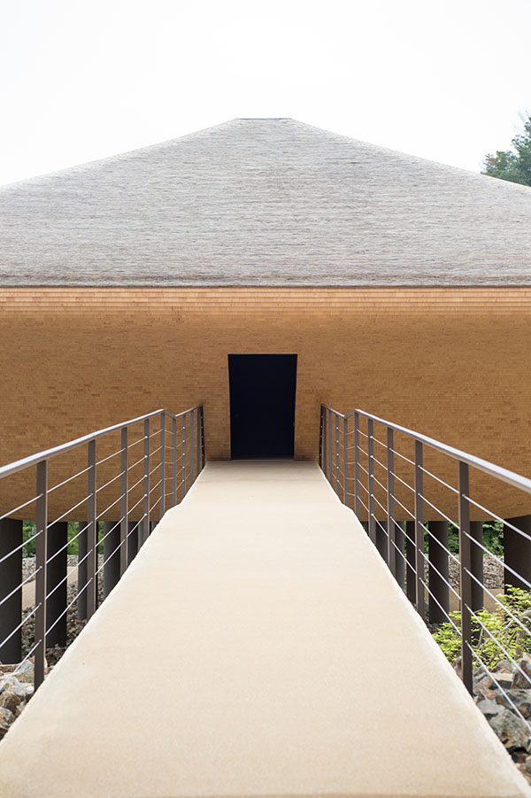
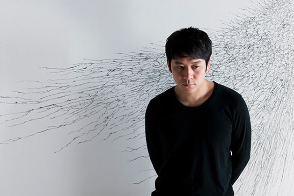
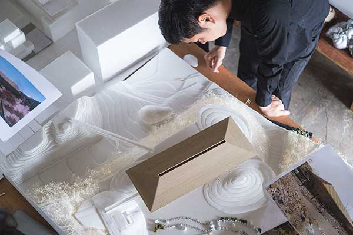
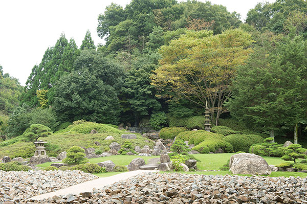

Префектура Хиросима · Фукуяма · искусство
«Котэй» в храме Синсёдзи: тёмный павильон над каменным полем

Храм Синсёдзи под Фукуямой перестроили в «музей дзэн и сада», и самое известное в нём это павильон «Котэй». Снаружи он похож на лодку, а внутри гасит весь свет и оставляет гостя в темноте, где едва дрожит вода.
Храм
Музей дзэн и сада
Храм Синсёдзи (полное имя Тэнсин-дзан Синсёдзи) основали в 1965 году. Его построил местный промышленник, который глубоко почитал мастера дзэн и пригласил его настоятелем; храм принадлежит школе Риндзай. В последние годы здесь больше пяти лет шла большая перестройка, и в сентябре 2016 года Синсёдзи открылся заново под именем «музея дзэн и сада». Теперь здесь смотрят как на произведения искусства сад, постройки, скульптуру и даже еду.

Котэй
Лодка, которая несёт дзэн через волны
Самый известный объект храма это павильон «Котэй». На грубых крупных камнях, рассыпанных как морская галька, на железных столбах стоит огромное здание с мягкими изогнутыми формами и крышей из щепы кедра. Издалека кажется, что оно парит над землёй. Внутрь ведёт крошечная дверь, а за ней темнота; глаза привыкают не сразу, и тогда впереди проступает едва мерцающая вода.
Проектировала павильон платформа SANDWICH, которой руководит скульптор Кохэй Нава. Внутри нет ни капли естественного света, и это сделано намеренно. Основание храма связано с корабельным делом, поэтому постройку задумали как корабль, а камни под ней как волны: лодка мягко обходит препятствия, не ломаясь об них. Одновременно внутрь пускают всего шестнадцать человек.



Художник
Кохэй Нава и работа со светом
Кохэй Нава родился в 1975 году в Осаке. Он скульптор, преподаёт в художественном университете в Киото, а в 2009 году собрал вокруг себя творческую платформу SANDWICH. Нава работает с самыми разными материалами и технологиями, расширяя границы скульптуры. О дзэн он говорит, что его дух похож на то состояние сосредоточенности, в котором рождается скульптура.


Сад
Камни, сосны и живой саговник
Вокруг павильона раскинулся японский сад, который устроил мастер садового искусства. Ползучие сосны и камни у воды задают ему настроение, и сад выглядит так, будто его оставили нетронутым. Отдельная примета это крупный саговник: его привёз знаток редких растений, и издалека растение похоже на живое существо.

Важно знать
Храм меняется
Сейчас храм работает как «музей дзэн и сада» только до 31 декабря 2026 года, дальше наступит перерыв. С 1 апреля 2027 года это место станет храмом Синсёдзэн-дзи и будет прежде всего учебной площадкой для монахов: сюда станут принимать тех, кто готовится к посвящению, и гостей, которые хотят пройти практику дзэн с ночёвкой. Смотреть «Котэй» можно по сеансам: с 25 июля 2026 года их семь, по 25 минут, с 10:10 до 16:40, по живой очереди и без записи, а заходить в середине и снимать внутри нельзя. Кафе и другие точки питания на территории сейчас не работают. Опыты дзэн при этом остаются: сидение в медитации стоит 1 000 иен по записи, переписывание сутры тоже 1 000 иен.
Храм Синсёдзи
- Адрес
- префектура Хиросима, Фукуяма, Нумакума-тё, Камияманами, 91
- Телефон
- +81 84-988-1111
- Часы работы
- 9:00–17:00, последний вход 16:30
- Цены
- взрослый 1 800 иен, группа от 20 человек 1 500 иен; студенты вузов и старшеклассники 1 000 и 800 иен; школьники 500 и 300 иен
- Просмотр «Котэй»
- сеансы с 10:10 до 16:40, около 25 минут, без записи
- Сайт
- szmg.jp
Фото: Нобутада Омотэ, SANDWICH, Сюнго Такэда, Масахидэ Накамура.